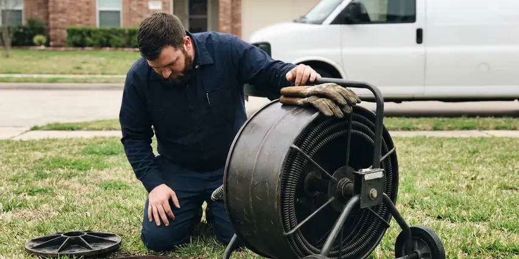

Basement Leak Repair in Clovis, NM
Basement water is easy to misread, and many plumbers guess at the cause in Clovis, NM. Our team knows how soil, storms and plumbing each push water inside.
- Pipe & Drain Repairs
- Lasting Repairs
- Fast Leak Detection
- Expert Foundation Care

Need Basement Leak Repair in Clovis, NM?
Contact GVK Plumbing today for a careful inspection and lasting repair.
Your Experts for Basement Leak Repair in Clovis, NM
GVK Plumbing focuses on comprehensive basement leak repair. We understand the challenges that New Mexico soil conditions and storms pose to foundations, leading to leaks, water intrusion, and possible structural damage. Summer monsoon storms can bring sudden heavy rain to New Mexico, causing flash flooding that overwhelms drainage and backs up into low areas.
Our expertise includes:
- Advanced Leak Detection Technology
- Sump pump, floor drain and backwater valve installation and service
- Foundation crack sealing and injection

Additional Plumbing Maintenance Services in Clovis, NM
Our maintenance and specialty plumbing services in Clovis, NM protect your home year-round and extend the life of every system.


Customers
Why Choose GVK Plumbing for Basement Leak Repair in Clovis, NM?
Choosing the right contractor for basement leak repair is crucial for the long-term health of your home. We use proven methods and quality materials to ensure every repair is durable and effective.
- Local Expertise, We understand the specific soil conditions, climate patterns, and typical foundation types found in Clovis.
- Code Compliant, All our work adheres strictly to local plumbing and building codes in Clovis and New Mexico.
- Lasting Solutions, Our repairs are designed to withstand New Mexico weather, including heavy rains and changing soil moisture.
Citywide Coverage
We provide consistent, high-quality basement waterproofing services across the entire Clovis area, ensuring no homeowner is left with a wet basement.
Experienced Team
Our team consists of well trained plumbing professionals with extensive experience in basement leak detection and repair. They are experts in identifying the exact source of water intrusion, from foundation cracks to faulty drainage systems.
Safety-First Approach
Standing water in a basement can reach outlets, water heaters and furnace components, so we check for electrical hazards before we work. All repairs meet the plumbing code used in your city or county.
Trusted Certified Clovis Plumbing Services Professionals
At GVK Plumbing, we take pride in providing certified plumbing services throughout Clovis, NM. Backed by leading industry credentials, our experienced plumbers combine technical skill with genuine customer care. Whether it is repair, installation, or maintenance, we follow strict safety and quality standards to deliver lasting results you can trust.
Call Us Now PHCC Plumbing Contractor Recognition
PHCC Plumbing Contractor Recognition Better Business Bureau (BBB) Accreditation
Better Business Bureau (BBB) Accreditation Angi Certified Pro
Angi Certified Pro ISO 9001 Quality Management Certification
ISO 9001 Quality Management CertificationLasting Basement Leak Repair Services in Clovis, NM
Drain and Sewer Pipe Leak Repair in Clovis, NM
Cast iron drain stacks in older homes crack and scale with age, and plastic joints can separate if a line was poorly supported. These leaks usually show up only when an upstairs fixture runs. We run water through each drain while watching the basement, then confirm the crack with a camera. Repairs range from a single section swap to replacing an entire stack with PVC or ABS.

Exterior Waterproofing Solutions in Clovis, NM
For comprehensive basement leak prevention, exterior waterproofing involves excavating around your foundation and applying waterproof membranes or coatings. This creates a strong barrier against moisture intrusion from the outside. While more involved, this method offers excellent long-term protection against water damage, especially for older homes in Clovis.
Interior Drainage Systems in Clovis
When exterior excavation isn't practical, interior drainage systems provide an effective solution for managing basement leaks. We install perimeter drains along the basement walls, collecting water before it can surface and directing it to a sump pump for removal. This system is less disruptive and can be a cost-effective way to dry out a wet basement.
Sump Pump Repair and Installation in Clovis, NM
Many basements rely on a sump pit to handle storm runoff and groundwater. Summer monsoon storms can bring sudden heavy rain to New Mexico, causing flash flooding that overwhelms drainage and backs up into low areas. Pumps from brands like Zoeller, Liberty and Wayne fail most often from a stuck float or a burned-out motor after sitting idle for long stretches. We repair or replace the pump, check the check valve and route the discharge well away from the foundation. A battery backup is worth considering because big storms often knock out power.
Floor Drain and Backwater Valve Repair in Clovis
A basement floor drain that backs up during heavy use or a storm typically points to a blockage or a failed trap. We clear the drain, check the line to the main sewer and replace cracked traps and covers. Installing a backwater valve stops sewage from pushing back into the basement if the main line surcharges. We set the valve where it can be serviced easily.
Water Heater and Appliance Leak Repair in Clovis, NM
Water heaters, softeners and laundry machines are often installed in basements, and their leaks pool quickly. A dripping T&P valve, a corroded tank bottom or a split washer hose are frequent culprits. We repair or replace the failed part and install drain pans and leak sensors to catch future problems early. If a tank has rusted through, we can replace it the same day in most situations.
Wall Leak Solutions in Clovis, NM
Beyond foundation cracks, we address leaks originating from basement walls due to porous concrete or masonry. Our methods include applying waterproof coatings and sealants that create a robust barrier against moisture. We also inspect for exterior drainage issues that might contribute to wall saturation, offering complete solutions for your Clovis home.

Clogged Drain Tile Repair in Clovis
Interior or exterior drain tile systems can become clogged with sediment or tree roots over time, leaving them useless. We focus on diagnosing and clearing blockages in these critical drainage systems, restoring their ability to divert water away from your basement walls and foundation in Clovis.
Basement Leak Repair Near Me in Clovis, NM
Our team is always ready to dispatch to your Clovis location, providing prompt and efficient basement leak repair services. We take pride in being a reliable community partner, committed to protecting homes throughout Clovis from the risks of water damage.
When you search for basement leak repair near me in Clovis, NM, GVK Plumbing is your trusted local expert. We are very familiar with the local soil conditions, weather patterns, and common building practices that influence basement integrity in this area. Our proximity means faster response times and local expertise.
GVK Plumbing at a Glance
- Licensed and insured plumbers serving Clovis, NM
- Same-day appointments and 24/7 emergency response
- Clear written estimates, no hidden fees
- 4.8-star rated by 320+ New Mexico customers
Clovis Map
Clovis Information
- Population
- 37,612
- Area codes
- Local
- Service area
- Clovis and communities within 40 miles
- Nearby
- Portales, Lovington, Roswell, Hobbs
Basements in Clovis, NM can take on water from storm runoff, saturated soil and corroded pipes, so leaks need to be traced to the real source to stay fixed. Many rural homes rely on private wells, and some groundwater carries naturally occurring arsenic or high mineral content that requires testing and treatment.
Expert Services
Trust our professionals for reliable GVK Plumbing solutions in Clovis, NM.
Our Specialized Plumbing Services in Clovis, NM
At GVK Plumbing, we provide a complete range of plumbing services across Clovis, NM. From leak detection to full system installations, our team ensures fast, precise, and affordable service for both residential and commercial properties. Explore our core services below:


How Our Basement Leak Repair Process Works in Clovis, NM
We follow a clear process from initial contact to final inspection, keeping you updated every step of the way.
Request a Quote
Call (505) 581-4975 and describe where you see water and when it appears. We schedule a visit, often the same day, and explain our inspection fee up front.
Trace the Source
Our technician uses moisture meters, thermal imaging and pressure or dye tests to pinpoint the leak. We show you what we found and give you clear repair options.
Repair and Verify
We make the repair, then retest the line or drain under real use. You get a summary of the work and tips to keep the basement dry.
Frequently Asked Questions About Basement Leak Repair in Clovis
The cost of basement leak repair in Clovis, NM can vary significantly, typically ranging from $500 for minor crack repairs to $15,000 or more for extensive exterior waterproofing or drainage system installations. Factors include the leak's severity, accessibility, and the chosen repair method. We provide a detailed estimate after a thorough inspection.
Common signs of a basement leak include damp spots on walls or floors, a musty odor, visible mold or mildew growth, white powdery efflorescence on concrete or masonry, pooling water, and warped baseboards or flooring. Don't ignore these indicators; addressing them early can prevent more significant issues.
Exterior waterproofing solutions, such as installing a perimeter drain or applying an exterior membrane, do require excavation around the foundation of your house. However, interior drainage systems or crack injections typically do not. We'll assess your specific situation in Clovis and recommend the least invasive yet most effective approach.
For minor crack repairs, a permit may not be required. However, significant projects involving excavation, structural changes, or major plumbing modifications for drain tile systems often require permits from the Clovis building department. GVK Plumbing handles all required permit applications to ensure compliance.
Prevention involves proper grading around your foundation, ensuring gutters and downspouts divert water away from the house, maintaining a clear drainage system, and regularly checking for foundation cracks. Consider planned landscaping solutions and annual plumbing inspections by GVK Plumbing to help prevent future issues in Clovis.
GVK Plumbing partners with trusted brands known for their durability and effectiveness in waterproofing and foundation repair. This includes products from industry leaders like Xypex, Sika, Tremco, and quality sump pump manufacturers like Zoeller and Wayne, ensuring reliable and long-lasting solutions for your Clovis home.
Basement leak repair directly addresses existing points of water entry, like sealing cracks or fixing drainage. Basement waterproofing is a broader term that covers all strategies, both proactive and reactive, to prevent water intrusion, including repairs and preventive measures like exterior membranes or improved grading. GVK Plumbing offers both services in Clovis.
We prioritize dependable, reliable brands known for their durability and performance in basement waterproofing. This includes trusted names for epoxy and polyurethane injection materials, as well as reputable sump pump brands like Zoeller, Little Giant, and Liberty Pumps. Our material selection is based on the specific needs of your Clovis property.
What People Are Saying About Our Plumbing Experts?

Sofia M.
Two new toilets installed in one visit, no mess left behind, and the tech even adjusted a faucet he noticed was dripping. Fair pricing and really friendly.
Toilet Installation · Portales, NM
James P.
Our commercial plumbing system had a leak under the sink, and GVK Plumbing handled it professionally. The plumbers arrived quickly and restored everything without disruption to our customers.
Commercial Plumbing · Portales, NMLaura S.
I scheduled a water heater replacement, and the team made the process smooth and affordable. The new unit works perfectly, and they cleaned up after completing the job.
Water Heater Replacement · Portales, NM
Daniel K.
A pipe burst at 11 pm and they actually answered. The plumber showed up within the hour, shut everything down, and had us back to normal the next morning. Could not ask for more.
Emergency Plumbing · Las Vegas, NM
Patricia H.
We had a slab leak that two other companies could not find. GVK Plumbing located it in under an hour, explained our options, and the price matched the quote to the dollar.
Slab Leak Repair · Roswell, NM
Mark T.
When our office needed drain cleaning, GVK Plumbing provided quick, reliable service. The plumber arrived on time and made sure every drain flowed perfectly before leaving. Very satisfied.
Drain Cleaning · Artesia, NM